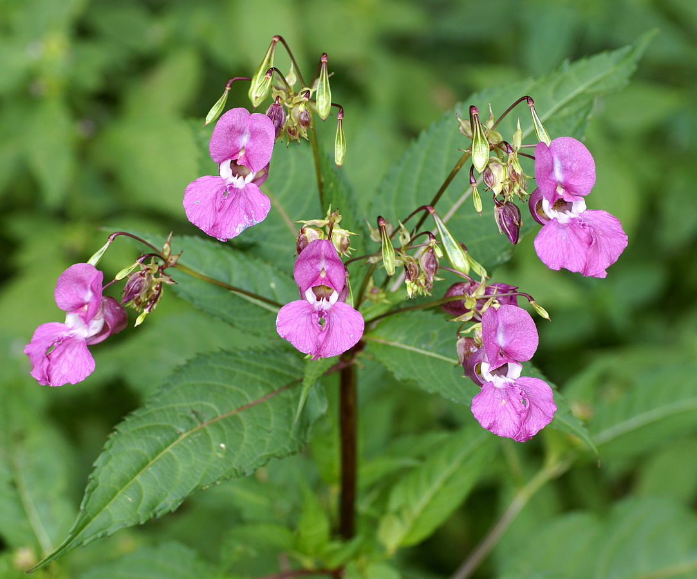

Himalayan Balsam

Description:
The leaves are simple and ovate with serrated margins. The stem arrangment is opposite with red petioles. The stem is hollow and red. The flowers are pink with 2 petals. the fruit are paper like seed capsules with a red tinge.
How to get rid of it?
Pull the plants up before they form their seeds. This is because their seeds are eaisily spread without notice.
What to replace it with?
Himalayan Balsam can be replaced with Joe Pye weed which is native to onatrio.